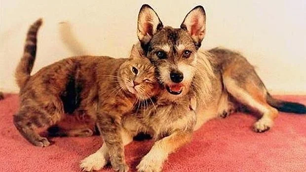
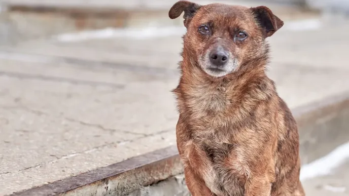

Nuestra misión
Rescatar, rehabilitar y reubicar a perritos y gatitos en situación de calle, promoviendo la adopción responsable y el respeto por la vida animal dentro de nuestra comunidad.

Huellitas ComunitariasSomos el proyecto PAEC Huellitas Comunitarias, un espacio creado para rescatar, cuidar y ayudar a encontrar un hogar lleno de amor para perritos y gatitos que se encuentran en situación de abandono.
Este proyecto nace en nuestra preparatoria CBTis 116, donde como estudiantes queremos poner nuestro granito de arena para hacer una diferencia en la vida de estos animalitos. 💙
Nuestro objetivo es promover la adopción responsable y apoyar a los animalitos que necesitan alimento, cuidados y un lugar seguro donde vivir. Creemos que con pequeñas acciones podemos lograr grandes cambios y ayudar a que más perritos y gatitos tengan un hogar, comida y, sobre todo, mucho cariño. 🐶🐱❤️
Porque cada huellita cuenta y juntos podemos dejar una huella de amor. 🐾
Conoce a nuestros peluditos
Cada año miles de animales son abandonados. Adoptar salva dos vidas: la del peludito que encuentra un hogar y la tuya, que ganas un compañero fiel. Esteriliza, adopta y no compres.
Rescatar, rehabilitar y reubicar a perritos y gatitos en situación de calle, promoviendo la adopción responsable y el respeto por la vida animal dentro de nuestra comunidad.
Ser el proyecto referente de bienestar animal en la zona, logrando que ningún peludito vuelva a sentir el abandono.